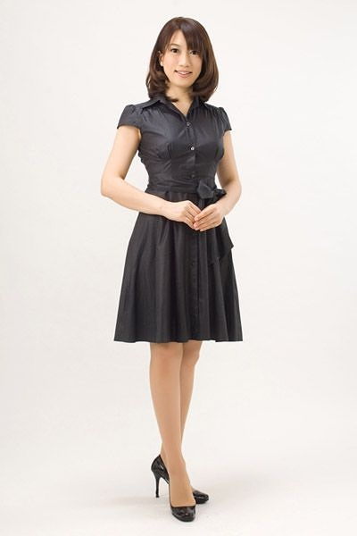

PROFILE
児玉りえ



児玉りえRie Kodama
| カテゴリ | MC/司会、ナレーター、モデル |
|---|---|
| 身長 | 168 |
| 趣味 | ピアノ、料理 |
| 参考URL |
経歴
MC
- スカパーフェクトTV「カラオケグランプリ」司会
- 読売新聞大手小町プレス発表
- Nikon新製品プレス発表
- CASIO新製品プレス発表
- コクヨプレス発表
- Domaniプレス発表
- BAILAプレス発表
- ちゃおプレス発表
- このマンガがすごい！大賞 プレス発表 表彰式
- FORSTEプレス発表
- Mysticプレス発表
- ロクシタンプレス発表
- ANAプレス発表
- 花王プレス発表
- ブルガローズプレス発表
- POKKAプレス発表
- 霧島酒造プレス発表
- 機動戦士ガンダム30周年記念プロジェクトプレス発表
- 機動戦士ガンダム ザク豆腐プレス発表
- トロ鎌倉駅一日駅長プレス発表
- 富士スピードウェイファン感謝祭
- 東京ガールズコレクション
- ヨネックスレディス
- マリノスタウン花火大会
- ブリディッシュカウンシル司会
- フィールズ新機種発表会
- ニューギンファン感謝祭
- サンセイＲ＆Ｄ新台発表会
- 花王メイクショー
- DHCメイクショー
- 茨城ゴールデンゴールズトークショー
- 朝日新聞サスティナブルジャパンシンポジウム
- 内閣府主催 川と水のシンポジウム
- 東京都主催 産業交流展開会式、表彰式
- 電気自動車開発技術展 開会式
- 施設園芸 植物工業展 開会式
- 内閣府主催 少子化対策シンポジウム
- 東京都主催 蓄熱セミナー
- 経済産業省 JHFCセミナー
- 中外製薬セミナー
- アボットジャパンセミナー
- 日商エレクトロニクスセミナー
- 危機管理産業展 開会式
- 京都知的財産シンポジウム
- 宇都宮記念病院開院内覧会
NA
- 東京モーターショー
- オートサロン
- シーテックジャパン
- エコプロダクツ
- リテールテック
- CP+
- インターロップ
- ゲームショー
- AOU
- トラックショー
- 日経住まいのリフォーム展
- ジャパン建材フェア
- Foom Japan
- 設計製造ソリューション
- 情報セキュリティEXPO
- データウェアハウスEXPO
- クラウドコンピューティングEXPO
- JIMTOF
- ISOT
- 国際物流展
- ITEM
- 国際ウェルデングショー
- モーターサイクルショー
- スーパーマーケットトレードショー
- インターネプコン
- ドラッグストアショー
- 電設工業展
- HVAC
- Panasonicプライベートショー
- Nikonプライベートショー
- 三菱電機プライベートショー
- 東京ガスプライベートショー
- 大阪ガスプライベートショー
- 富士通プライベートショー
- 日立プライベートショー
ナレーション
- メニコンDVD
- カネボウDVD
- 宇都宮記念病院DVD
トークショー
- 山田優・押切もえ・杉本彩・鈴木亜久里・Drコパ・小森純・JOY・玉木宏・スザンヌ・小泉里子・理衣・糸井重里・片岡安祐美・長谷川理恵・四元奈生美・角田信朗・山崎まさや・博多華丸 大吉・夢枕獏・モンキーパンチ・宇崎竜童・鈴木えみ・磯山さやか・峰竜太・京本正樹・ＬＬＲ・囲碁将棋・コシノジュンコ・三浦貴大・池田秀一・南明菜